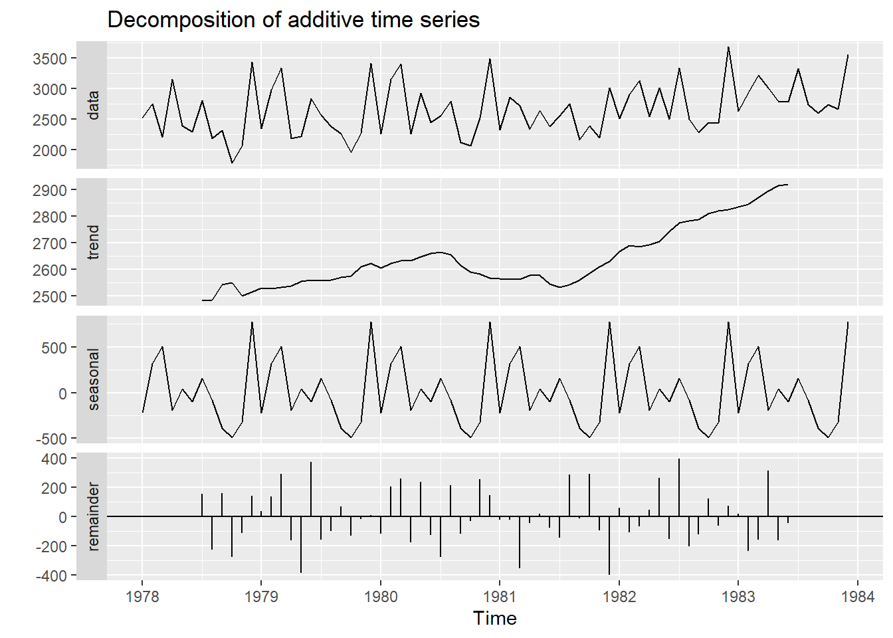

library(ggplot2)
library(forecast)
library(fpp2)Tema II: Descomposición de series
Curso: Series Cronológicas
1 librerías
2 Descomposición aditiva
contrayentes<-read.csv("contrayentes.csv",sep=";")
y<-ts(contrayentes$serie,start=c(1978,1),frequency=12)
aditivo<-decompose(y,type="additive")
names(aditivo)[1] "x" "seasonal" "trend" "random" "figure" "type" aditivo$x #serie original Jan Feb Mar Apr May Jun Jul Aug Sep Oct Nov Dec
1978 2522 2750 2210 3154 2392 2288 2800 2178 2316 1782 2068 3436
1979 2344 2980 3334 2184 2212 2838 2560 2380 2254 1956 2270 3410
1980 2264 3144 3400 2260 2924 2440 2550 2788 2114 2068 2516 3488
1981 2320 2858 2716 2340 2638 2374 2550 2746 2160 2388 2194 3010
1982 2504 2898 3124 2544 3010 2494 3330 2494 2278 2446 2436 3676
1983 2630 2928 3218 3012 2794 2778 3322 2734 2600 2734 2664 3546aditivo$seasonal #índices estacionales normalizados Jan Feb Mar Apr May Jun
1978 -223.76111 316.45556 506.25556 -194.44444 40.25556 -96.42778
1979 -223.76111 316.45556 506.25556 -194.44444 40.25556 -96.42778
1980 -223.76111 316.45556 506.25556 -194.44444 40.25556 -96.42778
1981 -223.76111 316.45556 506.25556 -194.44444 40.25556 -96.42778
1982 -223.76111 316.45556 506.25556 -194.44444 40.25556 -96.42778
1983 -223.76111 316.45556 506.25556 -194.44444 40.25556 -96.42778
Jul Aug Sep Oct Nov Dec
1978 159.35556 -83.82778 -386.51111 -490.12778 -323.49444 776.27222
1979 159.35556 -83.82778 -386.51111 -490.12778 -323.49444 776.27222
1980 159.35556 -83.82778 -386.51111 -490.12778 -323.49444 776.27222
1981 159.35556 -83.82778 -386.51111 -490.12778 -323.49444 776.27222
1982 159.35556 -83.82778 -386.51111 -490.12778 -323.49444 776.27222
1983 159.35556 -83.82778 -386.51111 -490.12778 -323.49444 776.27222aditivo$trend #tendencia Jan Feb Mar Apr May Jun Jul Aug
1978 NA NA NA NA NA NA 2483.917 2486.083
1979 2529.333 2527.750 2533.583 2538.250 2553.917 2561.250 2556.833 2560.333
1980 2604.750 2621.333 2632.500 2631.333 2646.250 2659.750 2665.333 2655.750
1981 2564.167 2562.417 2562.583 2577.833 2577.750 2544.417 2532.167 2541.500
1982 2667.667 2689.667 2684.083 2691.417 2703.917 2741.750 2774.750 2781.250
1983 2834.667 2844.333 2867.750 2893.167 2914.667 2918.750 NA NA
Sep Oct Nov Dec
1978 2542.500 2548.917 2501.000 2516.417
1979 2569.917 2575.833 2608.667 2621.750
1980 2615.333 2590.167 2581.583 2566.917
1981 2560.167 2585.667 2609.667 2630.167
1982 2786.417 2809.833 2820.333 2823.167
1983 NA NA NA NAaditivo$random #residuo Jan Feb Mar Apr May Jun
1978 NA NA NA NA NA NA
1979 38.42778 135.79444 294.16111 -159.80556 -382.17222 373.17778
1980 -116.98889 206.21111 261.24444 -176.88889 237.49444 -123.32222
1981 -20.40556 -20.87222 -352.83889 -43.38889 19.99444 -73.98889
1982 60.09444 -108.12222 -66.33889 47.02778 265.82778 -151.32222
1983 19.09444 -232.78889 -156.00556 313.27778 -160.92222 -44.32222
Jul Aug Sep Oct Nov Dec
1978 156.72778 -224.25556 160.01111 -276.78889 -109.50556 143.31111
1979 -156.18889 -96.50556 70.59444 -129.70556 -15.17222 11.97778
1980 -274.68889 216.07778 -114.82222 -32.03889 257.91111 144.81111
1981 -141.52222 288.32778 -13.65556 292.46111 -92.17222 -396.43889
1982 395.89444 -203.42222 -121.90556 126.29444 -60.83889 76.56111
1983 NA NA NA NA NA NAaditivo$figure #índices estacionales normalizados [1] -223.76111 316.45556 506.25556 -194.44444 40.25556 -96.42778
[7] 159.35556 -83.82778 -386.51111 -490.12778 -323.49444 776.27222plot(aditivo)
autoplot(aditivo)
Las barras indican que cada gráfico debe ser considerado a su tamaño relativo. Se puede eliminarlo con ´range.bars=FALSE´.
autoplot(aditivo, range.bars=FALSE)
tend <- aditivo$trend
tend.estac <- aditivo$trend+aditivo$seasonal
serie.aj.estac<-aditivo$x-aditivo$seasonal
autoplot(cbind(aditivo$x,tend,tend.estac,serie.aj.estac),col=1:4, size = 1)+
xlab("tiempo")+ylab("contrayentes")+
ggtitle("Serie contrayentes")+
scale_color_manual(labels = c("serie original","tend", "tendencia+estac","serie.aj.estac"),
values = 1:4)3 Descomposición multiplicativa
turistas<-read.csv("turistas.csv",sep=";")
y<-ts(turistas$turistas,start=c(1991,1),frequency=12)
ts.plot(y)multiplicativo<-decompose(y,type="multiplicative")
names(multiplicativo)[1] "x" "seasonal" "trend" "random" "figure" "type" multiplicativo$x #serie original Jan Feb Mar Apr May Jun Jul Aug Sep Oct
1991 47204 45584 48206 36619 31607 36859 47855 45846 33029 37674
1992 58361 58168 54148 45539 41879 46124 57957 52587 36224 40615
1993 70545 69626 63736 53469 43217 47328 66448 55842 42217 45353
1994 83163 73510 78045 57318 48028 50142 67431 64030 49012 52665
1995 88908 76361 72734 60732 52293 54564 70297 61089 49291 51141
1996 90627 80543 78923 60261 50696 57057 66121 60594 44720 48271
1997 91584 80709 77573 58597 54849 60822 74928 62568 50868 54933
1998 101145 89743 89327 78634 64476 71379 85030 72376 56949 64173
1999 117108 98694 102553 81663 69663 76924 92211 80765 59367 66001
2000 115990 106290 107929 87931 75436 77011 91906 78326 65258 68832
Nov Dec
1991 43416 50750
1992 51978 67011
1993 56181 70043
1994 61670 76434
1995 68329 78871
1996 62856 80458
1997 62692 81367
1998 72802 96819
1999 81174 105462
2000 93995 119171multiplicativo$seasonal #índices estacionales normalizados Jan Feb Mar Apr May Jun Jul
1991 1.3434110 1.2059949 1.1800428 0.9464150 0.8078009 0.8679959 1.0872688
1992 1.3434110 1.2059949 1.1800428 0.9464150 0.8078009 0.8679959 1.0872688
1993 1.3434110 1.2059949 1.1800428 0.9464150 0.8078009 0.8679959 1.0872688
1994 1.3434110 1.2059949 1.1800428 0.9464150 0.8078009 0.8679959 1.0872688
1995 1.3434110 1.2059949 1.1800428 0.9464150 0.8078009 0.8679959 1.0872688
1996 1.3434110 1.2059949 1.1800428 0.9464150 0.8078009 0.8679959 1.0872688
1997 1.3434110 1.2059949 1.1800428 0.9464150 0.8078009 0.8679959 1.0872688
1998 1.3434110 1.2059949 1.1800428 0.9464150 0.8078009 0.8679959 1.0872688
1999 1.3434110 1.2059949 1.1800428 0.9464150 0.8078009 0.8679959 1.0872688
2000 1.3434110 1.2059949 1.1800428 0.9464150 0.8078009 0.8679959 1.0872688
Aug Sep Oct Nov Dec
1991 0.9564304 0.7160207 0.7766125 0.9400893 1.1719179
1992 0.9564304 0.7160207 0.7766125 0.9400893 1.1719179
1993 0.9564304 0.7160207 0.7766125 0.9400893 1.1719179
1994 0.9564304 0.7160207 0.7766125 0.9400893 1.1719179
1995 0.9564304 0.7160207 0.7766125 0.9400893 1.1719179
1996 0.9564304 0.7160207 0.7766125 0.9400893 1.1719179
1997 0.9564304 0.7160207 0.7766125 0.9400893 1.1719179
1998 0.9564304 0.7160207 0.7766125 0.9400893 1.1719179
1999 0.9564304 0.7160207 0.7766125 0.9400893 1.1719179
2000 0.9564304 0.7160207 0.7766125 0.9400893 1.1719179multiplicativo$trend #tendencia Jan Feb Mar Apr May Jun Jul Aug
1991 NA NA NA NA NA NA 42518.96 43508.17
1992 47320.00 48021.79 48435.79 48691.46 49170.75 50205.04 51390.25 52375.33
1993 54878.21 55367.62 55752.96 56200.08 56572.62 56874.08 57526.17 58213.75
1994 60565.12 60947.25 61571.54 62159.33 62692.71 63187.71 63693.38 64051.54
1995 64855.58 64852.46 64741.54 64689.67 64903.62 65282.62 65455.79 65701.67
1996 66253.08 66058.46 65847.38 65537.33 65189.71 65027.79 65133.79 65180.58
1997 65963.12 66412.33 66750.75 67284.50 67555.25 67586.29 68022.54 68797.33
1998 73925.92 74755.50 75417.54 76055.92 76862.17 77927.25 79236.21 80274.29
1999 83195.38 83844.12 84294.42 84471.33 84896.33 85605.29 85918.83 86188.75
2000 87951.21 87836.87 87980.71 88344.12 88996.29 90101.71 NA NA
Sep Oct Nov Dec
1991 44280.08 44899.33 45699.00 46513.04
1992 53252.25 53982.17 54368.33 54474.25
1993 58971.79 59728.38 60089.21 60406.92
1994 63949.04 63870.00 64189.96 64551.92
1995 66133.79 66372.04 66285.88 66323.21
1996 65131.25 65005.67 65109.38 65439.29
1997 69663.50 70988.13 72224.12 73065.12
1998 81198.33 81875.62 82217.96 82665.12
1999 86729.25 87214.42 87716.12 87960.29
2000 NA NA NA NAmultiplicativo$random #residuo Jan Feb Mar Apr May Jun Jul
1991 NA NA NA NA NA NA 1.0351607
1992 0.9180558 1.0043852 0.9473670 0.9882097 1.0543508 1.0584296 1.0372615
1993 0.9568799 1.0427257 0.9687666 1.0052718 0.9456794 0.9587074 1.0623792
1994 1.0221123 1.0001079 1.0741559 0.9743233 0.9483598 0.9142214 0.9737073
1995 1.0204332 0.9763369 0.9520433 0.9919758 0.9974021 0.9629216 0.9877608
1996 1.0182223 1.0110064 1.0157045 0.9715518 0.9626985 1.0108629 0.9336759
1997 1.0334976 1.0076919 0.9848196 0.9201926 1.0050907 1.0367747 1.0131048
1998 1.0184479 0.9954329 1.0037201 1.0924354 1.0384393 1.0552696 0.9869873
1999 1.0478002 0.9760513 1.0309837 1.0214906 1.0158016 1.0352460 0.9870916
2000 0.9816798 1.0033907 1.0395681 1.0516779 1.0493066 0.9846957 NA
Aug Sep Oct Nov Dec
1991 1.1017354 1.0417450 1.0804321 1.0105877 0.9310309
1992 1.0497798 0.9500203 0.9687948 1.0169614 1.0496817
1993 1.0029563 0.9998100 0.9777345 0.9945438 0.9894204
1994 1.0452027 1.0703919 1.0617464 1.0219691 1.0103695
1995 0.9721499 1.0409231 0.9921553 1.0965160 1.0147396
1996 0.9719815 0.9589298 0.9561603 1.0269141 1.0491400
1997 0.9508834 1.0197972 0.9964219 0.9233381 0.9502568
1998 0.9426809 0.9795203 1.0092374 0.9419059 0.9994040
1999 0.9797589 0.9559913 0.9744462 0.9843928 1.0230860
2000 NA NA NA NA NAmultiplicativo$figure #índices estacionales normalizados [1] 1.3434110 1.2059949 1.1800428 0.9464150 0.8078009 0.8679959 1.0872688
[8] 0.9564304 0.7160207 0.7766125 0.9400893 1.1719179serie.aj.estac<-y/multiplicativo$seasonalplot(multiplicativo)autoplot(multiplicativo,range.bars = TRUE)tend <- multiplicativo$trend
tend.estac <- multiplicativo$trend * multiplicativo$seasonal
serie.aj.estac<-multiplicativo$x/multiplicativo$seasonal
autoplot(cbind(multiplicativo$x,tend,tend.estac,serie.aj.estac),col=1:4, size = 1)+
xlab("tiempo")+ylab("contrayentes")+
ggtitle("Serie contrayentes")+
scale_color_manual(labels = c("serie original","tend", "tendencia+estac","serie.aj.estac"),
values = 1:4)4 Descomposición STL
y.stl1<-stl(y,t.window=20, s.window="periodic", robust=TRUE)
plot(y.stl1)y.stl2<-stl(y,t.window=5, s.window="periodic", robust=TRUE)
plot(y.stl2)y.stl3<-stl(y,t.window=5, s.window=3, robust=TRUE)
plot(y.stl3)5 Pronóstico con STL
y Jan Feb Mar Apr May Jun Jul Aug Sep Oct
1991 47204 45584 48206 36619 31607 36859 47855 45846 33029 37674
1992 58361 58168 54148 45539 41879 46124 57957 52587 36224 40615
1993 70545 69626 63736 53469 43217 47328 66448 55842 42217 45353
1994 83163 73510 78045 57318 48028 50142 67431 64030 49012 52665
1995 88908 76361 72734 60732 52293 54564 70297 61089 49291 51141
1996 90627 80543 78923 60261 50696 57057 66121 60594 44720 48271
1997 91584 80709 77573 58597 54849 60822 74928 62568 50868 54933
1998 101145 89743 89327 78634 64476 71379 85030 72376 56949 64173
1999 117108 98694 102553 81663 69663 76924 92211 80765 59367 66001
2000 115990 106290 107929 87931 75436 77011 91906 78326 65258 68832
Nov Dec
1991 43416 50750
1992 51978 67011
1993 56181 70043
1994 61670 76434
1995 68329 78871
1996 62856 80458
1997 62692 81367
1998 72802 96819
1999 81174 105462
2000 93995 119171y.train<-window(y,start=c(1991,1),end=c(1999,12))
y.test<-window(y,start=c(2000,1),end=c(2000,12))
y.stl3<-stl(y.train,t.window=20, s.window="periodic", robust=TRUE)
#forecast.stl
class(y.stl3)[1] "stl"pronostico<-forecast(y.stl3,h=12)
#default: suavizamiento exponencial
names(pronostico) [1] "model" "mean" "level" "x" "upper" "lower"
[7] "fitted" "method" "series" "residuals"plot(pronostico)
points(y.test,type="l",col=2)accuracy(pronostico) ME RMSE MAE MPE MAPE MASE ACF1
Training set 740.5391 4061.86 3137.288 1.223139 5.133671 0.5086205 -0.02485975accuracy(pronostico,y.test) ME RMSE MAE MPE MAPE MASE
Training set 740.5391 4061.860 3137.288 1.223139 5.133671 0.5086205
Test set -809.4054 7121.968 5903.980 -2.167474 6.857000 0.9571597
ACF1 Theil's U
Training set -0.02485975 NA
Test set 0.47164129 0.4945344Verificación de los cálculos:
#entrenamiento
e.train<-y.train-fitted(pronostico)
(MAE.train<-sum(abs(e.train))/length(e.train))[1] 3137.288(RMSE<-sqrt(sum((e.train)^2)/length(e.train)))[1] 4061.86#prueba
n<-12
e<- y.test - pronostico$mean
(MAE<-sum(abs(e))/n)[1] 5903.98sqrt(MSE<-sum(e^2)/n)[1] 7121.968MSE[1] 50722433(MAPE<-sum(abs(100*e/y.test))/n)[1] 6.8576 Pronóstico con tendencia
contrayentes<-read.csv("contrayentes.csv",sep=";")
y<-ts(contrayentes$serie,start=c(1978,1),frequency=12)
aditivo<-decompose(y,type="additive")plot(aditivo)autoplot(aditivo)tend <- aditivo$trend
tend.estac <- aditivo$trend+aditivo$seasonal
serie.aj.estac<-aditivo$x-aditivo$seasonalautoplot(cbind(aditivo$x,tend,tend.estac,serie.aj.estac),col=1:4, size = 1.2)+
xlab("tiempo")+ylab("contrayentes")+
ggtitle("Serie contrayentes")+
scale_color_manual(labels = c("serie original","tend", "tendencia+estac","serie.aj.estac"),
values = 1:4)Warning in colour && (!facets || !missing(colour)): 'length(x) = 4 > 1' in
coercion to 'logical(1)'
7 Regresión simple
data<-data.frame(y,tend,tend.estac,serie.aj.estac,t=seq_along(y))
head(data) y tend tend.estac serie.aj.estac t
1 2522 NA NA 2745.761 1
2 2750 NA NA 2433.544 2
3 2210 NA NA 1703.744 3
4 3154 NA NA 3348.444 4
5 2392 NA NA 2351.744 5
6 2288 NA NA 2384.428 6tail(data) y tend tend.estac serie.aj.estac t
67 3322 NA NA 3162.644 67
68 2734 NA NA 2817.828 68
69 2600 NA NA 2986.511 69
70 2734 NA NA 3224.128 70
71 2664 NA NA 2987.494 71
72 3546 NA NA 2769.728 72mod<-lm(serie.aj.estac~t,data=data)
summary(mod)
Call:
lm(formula = serie.aj.estac ~ t, data = data)
Residuals:
Min 1Q Median 3Q Max
-742.53 -141.81 -54.87 151.49 895.98
Coefficients:
Estimate Std. Error t value Pr(>|t|)
(Intercept) 2427.701 58.338 41.615 < 2e-16 ***
t 6.190 1.389 4.457 3.09e-05 ***
---
Signif. codes: 0 '***' 0.001 '**' 0.01 '*' 0.05 '.' 0.1 ' ' 1
Residual standard error: 244.9 on 70 degrees of freedom
Multiple R-squared: 0.221, Adjusted R-squared: 0.2099
F-statistic: 19.86 on 1 and 70 DF, p-value: 3.088e-05plot(as.numeric(data$y)~data$t,type="l")
abline(mod,col=2)
tail(data) y tend tend.estac serie.aj.estac t
67 3322 NA NA 3162.644 67
68 2734 NA NA 2817.828 68
69 2600 NA NA 2986.511 69
70 2734 NA NA 3224.128 70
71 2664 NA NA 2987.494 71
72 3546 NA NA 2769.728 72pred<-predict(mod,newdata = data.frame(t=73:83))
accuracy(mod) ME RMSE MAE MPE MAPE MASE
Training set 0 241.5066 186.4576 -0.8807482 7.178007 0.8821305